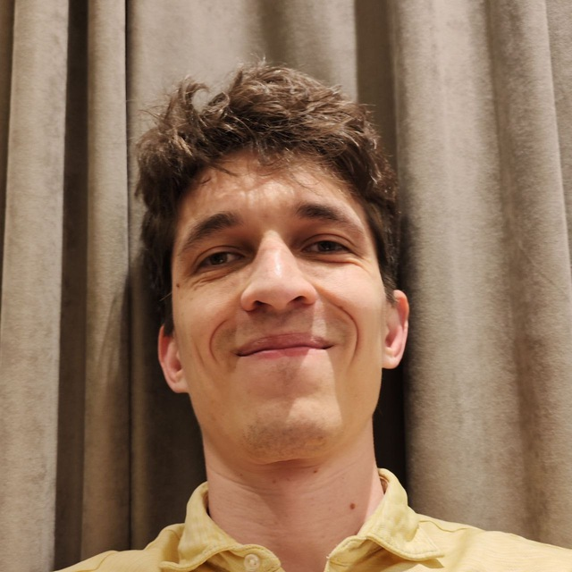

Marat Yuldashev

AI Engineering Tech Lead — Semrush (Adobe)
Delivered an AI agentic tool for extracting and analyzing internal data from the BigQuery data warehouse, significantly simplifying data access for designers, frontend engineers, and product managers. The solution ingests data from databases, MCPs, Google Docs, internal portals, Slack messages, dashboards, and more. It is highly customizable through skills and enables automation of a wide range of tasks across the company.
Transformed the team (backend engineer, frontend developer, and data engineer) into highly independent full-stack problem solvers, enabling the delivery of multiple features per day through a tightly integrated and automated setup using Claude Code and Cursor.
Python, LangChain, MCP, PG Vector store, Agentic Search, FastAPI, React (TypeScript), Postgres, BigQuery, Redis, REST, GraphQL
Experimentation / Data Science Team Lead — Semrush (Adobe)
Promoted to Product and Technical Lead of the Experimentation Team, managing the A/B testing platform (dbt, PostgreSQL, Python, React). Together with one engineer, completely rewrote the metrics computation pipeline, reducing the failure rate by 7x. Built a highly efficient, high-performing team of three carefully selected full-stack engineers empowered by Cursor and Claude Code, outperforming teams of ten.
BigQuery, Django, PostgreSQL, GraphQL, OpenAI SDK
Senior ML Engineer — Semrush (Adobe)
Joined as a Senior Machine Learning Engineer and rebuilt the user Lifetime Value prediction model and Returned Users predictions using dbt on BigQuery ML, increasing calculation speed by 10x and achieving close to zero failure rate.
BigQuery ML, dbt, SQL, Google Cloud, Airflow
Experimentation Lead — Space 307
Software company that provides a trading platform for a variety of financial instruments (700 employees). Tech lead and manager for the data science team responsible for the experimentation platform. Built from scratch an analytical tool to pull gigabytes of data from the analytical warehouse, run heavy-load calculations, and present the results, speeding up the analysis and reporting process from days to minutes. Implemented robust and powerful statistical tests. Developed the architecture of a new system for splitting users into groups, which was successfully implemented, allowing a large number of tests to run in parallel. As a result, the number of A/B tests grew from 5 per month to 20. Implemented an ongoing team training process and conducted over 50 interviews for analytics teams. Exceptional team = great results.
Professor in Applied Math — St. Petersburg State University
Was one of the youngest professors at the university. h-index 16, 65+ publications, 350+ citations. Supervised 10+ B.Sc. and M.Sc. students, most of them became successful software engineers. Lectures: Machine Learning, Software Engineering, Applied Mathematics, Communication Systems. National grant winner (University of Jyväskylä, Finland). Received one of the three grants of the President of Russia.
Lead Software Engineer — loyaltyplant.com
Designed and helped build the Java backend. Reverse engineered and deployed key systems to secure a major customer (B2B). Led migration to AWS.